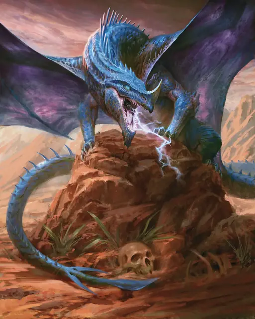

Вирмлинг синего дракона
Blue Dragon Wyrmling
Средний Дракон (Цветной), Принципиальный Злой

Класс Защиты 17 Инициатива +2 (12)
Хиты 65 (10к8 + 20)
Скорость 30 футов, Полёта 60 футов, Копания 15 футов
| мод | спас | ||
|---|---|---|---|
| СИЛ | 17 | +3 | +3 |
| ЛОВ | 10 | +0 | +2 |
| ТЕЛ | 15 | +2 | +2 |
| мод | спас | ||
|---|---|---|---|
| ИНТ | 12 | +1 | +1 |
| МДР | 11 | +0 | +2 |
| ХАР | 15 | +2 | +2 |
Иммунитеты Электричество
Чувства Тёмное зрение 60 футов, пассивное Восприятие 14, Слепое зрение 10 футов
Языки Драконий
Опасность 3 (700 опыта; БВ +2)
Действия
Мультиатака. Дракон совершает две атаки Раздиранием.
Раздирание. Бросок рукопашной атаки: +5, досягаемость 5 фт. Попадание: 8 (1к10 + 3) Рубящего урона плюс 3 (1к6) урона Электричеством.
Дыхание молнии (Перезарядка 5–6). Спасбросок Ловкости: Сл 12, каждое существо в Линии длиной 30 футов и шириной 5 футов. Провал: 21 (6к6) урона Электричеством. Успех: Только половина урона.
Бонус мастерства +2
Среда обитания Прибрежье, Пустыня
Сокровища Реликварные
Синие драконы
Драконы тирании и гроз
Надменные и властные, синие драконы — это цветные драконы, что жаждут подчинения и собирают последователей столь же ревностно, как иные драконы копят сокровища. Они стремятся обратить свои владения в империи — державы, коих страшатся целые народы.
Черты синих драконов резки и хищны: их венчают острые рога, а чешуя переливается цветами от глубокого сапфира до оттенка грозовых небес. Они обитают в пустынях и бесплодных землях, особенно в тех, где высятся умопомрачительно крутые вершины, с которых открывается вид на многие мили окрестностей. Логова свои они устраивают близ мест символической власти: покинутых твердынь великанов, исполинских изваяний павших империй или монументов, воздвигнутых их собственными почитателями.
Сокровищницы синих драконов полнятся регалиями владычества и шедеврами искусств. Эти драконы не питают интереса к ценностям заурядным или с изъянами, предпочитая им уникальные самоцветы, короны почивших монархов и волшебные предметы, способные расширить сферу их влияния.
Вирмлинги синих драконов часто служат иным могущественным созданиям, обучаясь искусству власти и зарабатывая грозную славу среди слабейших созданий. Поначалу многие вирмлинги служат преданно, но по мере того, как их силы дорастают до уровня амбиций, они неизбежно предают или покидают своих господ. Скромными сокровищами и посулами грядущего могущества эти вирмлинги соблазняют себе на службу малые группы существ.